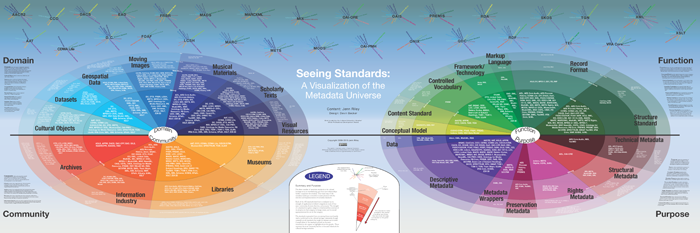

Jenn Riley’s Visualisation of the Metadata Universe has been around for a while but still gives the best overview of standards used in the cultural sector, archives, libraries and museums. In the image, numerous standards are displayed in the context of their function and where they are used.
Figure 3. The visualization of the Metadata Universe by Jenn Riley. (The recommendation is to look on-line)
|  |
Almost all standards on the metadata map created by Jenn Riley have an XML format available described with a DTD or an XML schema. For the XML schemas, both the ISO standard RelaxNG as well as W3C XML-schema formats are used. The choice depends solely on the skills of the creator of the schema. At the same time, it is also common to ensure that different types of schemas are available, so transformations from RelaxNG to XML schema and vice versa are often used. DTD is still around because old software is still in use, and it is often based upon using a DTD.
The most common way to use the different standards is to write a specification that describes a profile for your use case of the standard, which then is implemented in the setting you are operating. But here comes the part that the eArchiving building Block is tackling; we all write our own specifications on how to use the standards, so no one understands what anyone else has done. We need a set of common developed specifications that can be used and publicised in one central location, so they are easy to find for all. That is what eArchiving is trying to achieve.